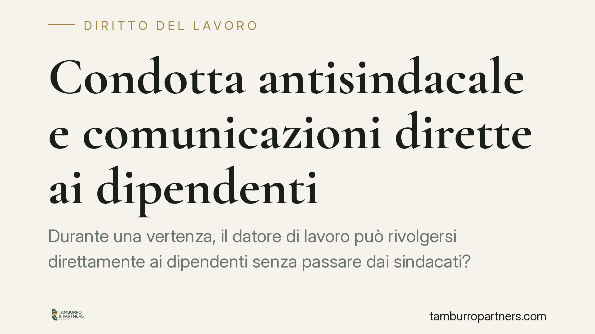

Condotta antisindacale e comunicazioni dirette ai dipendenti
Durante una vertenza, il datore di lavoro può rivolgersi direttamente ai dipendenti senza passare dai sindacati? Secondo una recente pronuncia del Tribunale di Bologna sì, purché la comunicazione resti corretta e non miri a svuotare il confronto sindacale. Il confine passa tra libera manifestazione del pensiero e condotta antisindacale ex art. 28 dello Statuto dei lavoratori.

Il caso e la decisione
Il Tribunale di Bologna, sezione lavoro, si è pronunciato su un ricorso con cui un'organizzazione sindacale lamentava come antisindacali alcune comunicazioni inviate dall'azienda direttamente ai dipendenti nel corso di una vertenza.
La questione è tutt'altro che teorica: nei momenti di conflitto il datore ha interesse a spiegare la propria posizione ai lavoratori, mentre il sindacato teme che il messaggio diretto aggiri la rappresentanza e indebolisca la trattativa.
Il giudice ha escluso la condotta antisindacale, ritenendo legittima la comunicazione diretta purché rispettosa dei toni e non diretta a inquinare il confronto con le sigle. Gli estremi esatti del provvedimento (numero e data) risultano in corso di pubblicazione: li citeremo quando disponibili, per consentirne la verifica.
Inquadramento normativo
L'art. 28 della L. 300/1970 (Statuto dei lavoratori) consente alle organizzazioni sindacali di chiedere al giudice, con procedura d'urgenza, l'ordine di cessazione dei comportamenti del datore «diretti ad impedire o limitare l'esercizio della libertà e dell'attività sindacale». La norma non elenca condotte tipiche: rimette al giudice la valutazione concreta dell'idoneità lesiva del comportamento.
Sul fronte opposto sta l'art. 21 della Costituzione, che tutela la libera manifestazione del pensiero, di cui è titolare anche il datore di lavoro. Comunicare ai propri dipendenti la lettura aziendale di una vertenza rientra, in linea di principio, in questa libertà.
Il punto di equilibrio è stato tracciato dalla giurisprudenza di legittimità, che distingue tra la libera espressione della posizione datoriale e la condotta che, per contenuto o modalità, mira a disarticolare l'azione sindacale (si vedano gli orientamenti della Cassazione sul rapporto tra art. 21 Cost. e art. 28 Statuto; riferimenti da verificare nella loro esatta massimazione). La comunicazione resta lecita finché informa; diventa antisindacale quando sostituisce, delegittima o scavalca la rappresentanza.
Il doppio criterio: contenuto e finalità
La chiave di lettura emersa è doppia e cumulativa.
Il contenuto deve essere corretto: niente informazioni false, pressioni, minacce velate o denigrazione dei rappresentanti. Il datore può esporre dati, offerte e ragioni, non screditare la controparte.
La finalità non deve essere quella di inquinare il confronto. Una cosa è informare i lavoratori in parallelo alla trattativa; altra è usare il messaggio diretto per indurli ad abbandonare lo sciopero o la posizione sindacale, trasformando la comunicazione in uno strumento di pressione individuale.
Se anche uno solo dei due criteri cede, la condotta può ricadere nell'area dell'art. 28.
Implicazioni pratiche
Per il datore di lavoro. Resta ferma la facoltà di comunicare con i propri dipendenti anche durante una vertenza. Il margine, però, è di metodo: toni misurati, contenuti verificabili, assenza di attacchi alle sigle. Una comunicazione mal calibrata espone al ricorso d'urgenza e all'ordine di cessazione, oltre al danno reputazionale interno.
Per le organizzazioni sindacali. La semplice esistenza di una comunicazione diretta non basta a fondare l'art. 28. Occorre dimostrare l'idoneità lesiva: la trattativa scavalcata, i lavoratori disincentivati dall'azione collettiva, i toni delegittimanti. Il ricorso va documentato, non limitato alla contestazione del principio.
Per i lavoratori. Ricevere una comunicazione aziendale durante una vertenza è di per sé legittimo e non obbliga ad alcuna adesione. Il contenuto va letto come posizione di parte, non come istruzione vincolante né come sostituzione del canale sindacale.
Cosa fare in concreto
- Verificare, prima di ogni comunicazione aziendale in fase di conflitto, che i contenuti siano fattuali e privi di riferimenti denigratori verso le rappresentanze.
- Conservare traccia documentale dei messaggi diffusi e delle fasi della trattativa, per ricostruire contenuto e tempistiche in caso di contenzioso.
- Distinguere nettamente il piano informativo da quello della pressione individuale: evitare messaggi che sollecitino i singoli ad abbandonare l'azione collettiva.
- Valutare l'idoneità lesiva di una comunicazione sulla base dei criteri di contenuto e finalità, non del solo fatto che sia stata inviata.
- Impostare preventivamente la strategia comunicativa, o la valutazione di un ricorso ex art. 28, con il supporto tecnico adeguato.
---
Contributo informativo a cura di Tamburro & Partners - Avv. Giuseppe Tamburro. Non costituisce parere legale.
Ogni storia di lavoro ha i suoi tempi.
Se gestisci HR e vuoi un confronto su contenzioso, ispezioni o licenziamenti, scrivi allo studio. Ti rispondiamo entro un giorno lavorativo.